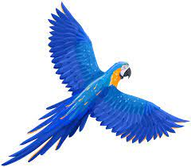
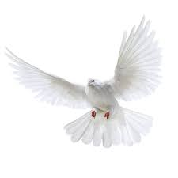

Go To Bottom
This is Animals 2 page
Topic 4Topic 5
Topic 6
Eagle
.jpg)
Eagle : This article is about the bird. For other uses, see Eagle (disambiguation) and Eagles (disambiguation). Eagle is the common name for many large birds of prey of the family Accipitridae. Eagles belong to several groups of genera, some of which are closely related. Most of the 60 species of eagle are from Eurasia and Africa.[1] Outside this area, just 14 species can be found—2 in North America, 9 in Central and South America, and 3 in Australia. Eagles are not a natural group but denote essentially any kind of bird of prey large enough to hunt sizeable (about 50 cm long or more overall) vertebrate
Parrot

Parrot : Parrots, also known as psittacines (/ˈsɪtəsaɪnz/),[1][2] are birds of the roughly 398 species[3] in 92 genera comprising the order Psittaciformes (/ˈsɪtəsɪfɔːrmiːz/), found mostly in tropical and subtropical regions. The order is subdivided into three superfamilies: the Psittacoidea ("true" parrots), the Cacatuoidea (cockatoos), and the Strigopoidea (New Zealand parrots). One-third of all parrot species are threatened by extinction, with higher aggregate extinction risk (IUCN Red List Index) than any other comparable bird group.[4] Parrots have a generally pantropical distribution with several species inhabiting temperate regions in the Southern Hemisphere, as well. The greatest diversity of parrots is in South America and Australasia. Characteristic features of parrots include a strong, curved bill, an upright stance, strong legs, and clawed zygodactyl feet. Many parrots are vividly coloured, and some are multi-coloured. Most parrots exhibit little or no sexual dimorphism in the visual spectrum. They form the most variably sized bird order in terms of length. The most important components of most parrots' diets are seeds, nuts, fruit, buds, and other plant material. A few species sometimes eat animals and carrion, while the lories and lorikeets are specialised for feeding on floral nectar and soft fruits. Almost all parrots nest in tree hollows (or nest boxes in captivity), and lay white eggs from which hatch altricial (helpless) young. Parrots, along with ravens, crows, jays, and magpies, are among the most intelligent birds, and the ability of some species to imitate human speech enhances their popularity as pets. Trapping wild parrots for the pet trade, as well as hunting, habitat loss, and competition from invasive species, has diminished wild populations, with parrots being subjected to more exploitation than any other group of birds. As of 2021, about 50 million parrots (half of all parrots) live in captivity, with the vast majority of these living as pets in people's homes.[5] Measures taken to conserve the habitats of some high-profile charismatic species have also protected many of the less charismatic species living in the same ecosystems. Parrots are the only creatures that display true tripedalism, using their necks and beaks as limbs with propulsive forces equal to or greater than those forces generated by the forelimbs of primates when climbing vertical surfaces. They can travel with cyclical tripedal gaits when climbing.[6]
pigeon
